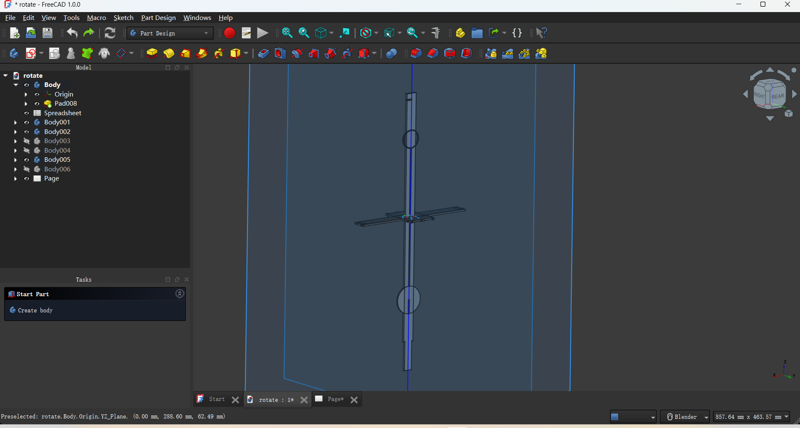
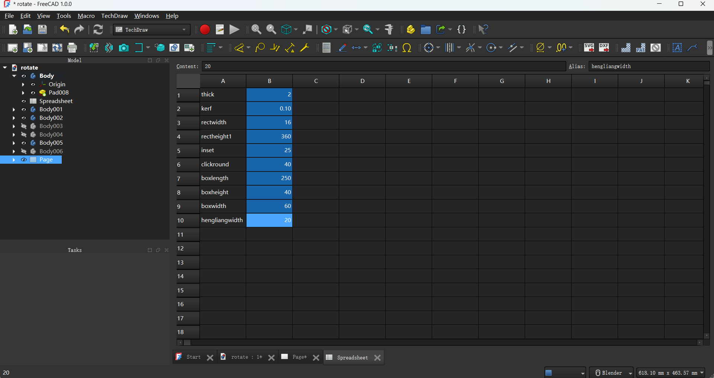
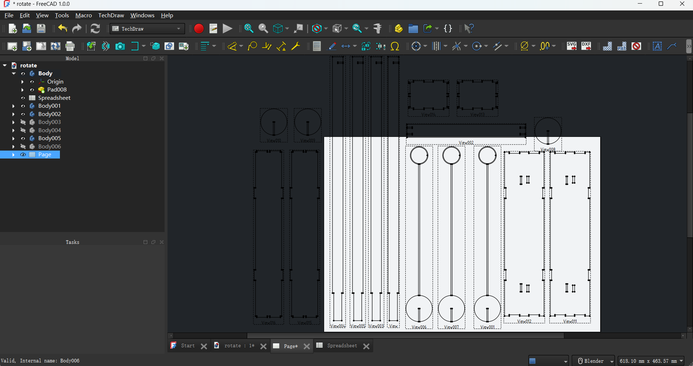
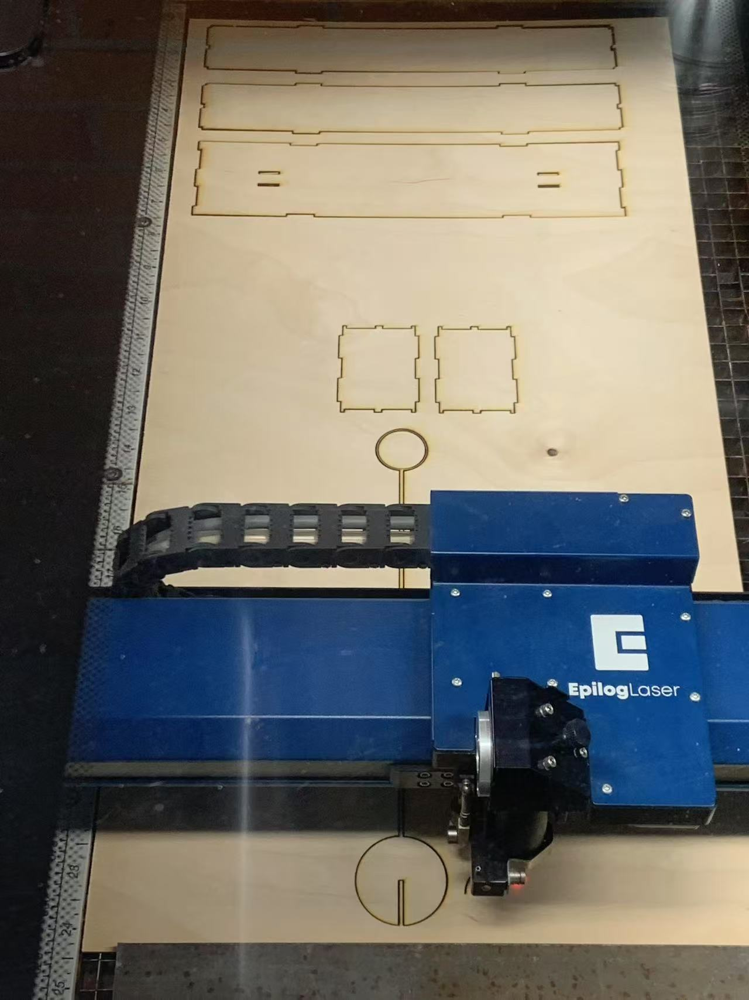
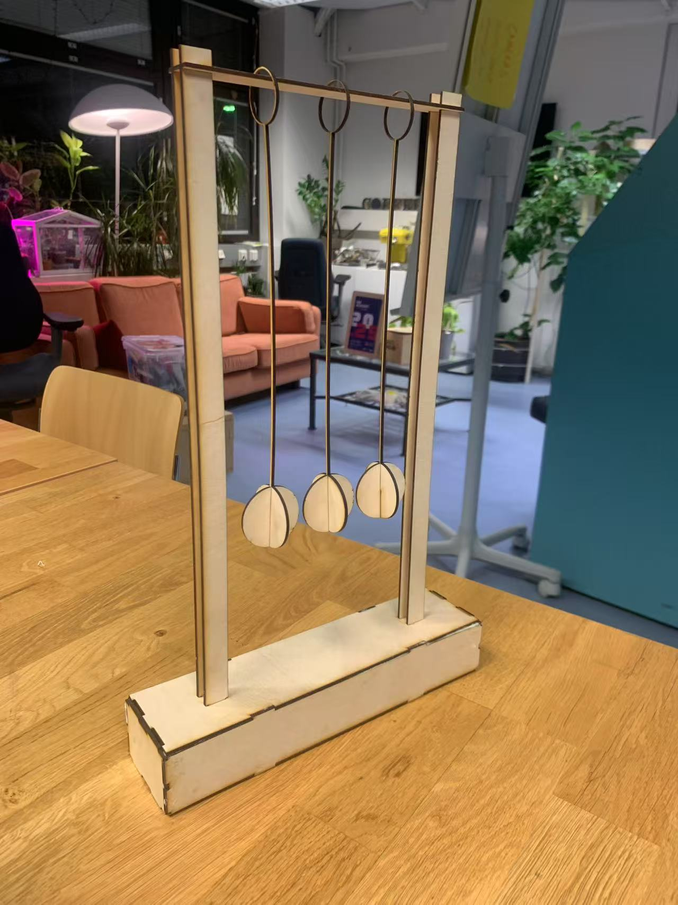

Introduction: Computer-controlled Cutting
Vinyl Cutting: Uses a sharp blade to cut 2D materials like PVC. It always used for making stuff like stickers, signs, and wall decals(mostly 2D design). Thick material like 3D stuff is not suitable to use this technology.
Waterjet Cutting: Uses a high-pressure stream of water(or mixed with abrasives) to cut through different thickness material( like metals, stone, ceramics, and glass). It's slow compared to other computer-controlled cutting method, but it is suitable for many different thickness and types of material, and the precision is also very good.
Laser Cutting: Uses a high-powered laser beam to melt material with limited thickness(suitable). It's precise and fast. material is mostly like metals, plastics, wood, and paper. But it struggles with some materials whicth too reflective.
Introduction: Laser Cutter
Laser Waist: It's like pen lip, the highest energy density of the laser beam.
Laser Focus: Like the camera focus, it is the place of the cutting material that the laser beam focus on.
Kerf: Laser cutter is not cutting stuff without wastage, the kerf is the width that the laser melting.
These terms will influence the cutting quality and precision. Properly managing the laser waiste and focus ensures efficient energy use and optimal cut quality. Accounting for kerf is essential if you want to make two parts joined together successfully.
Project
I use laser cutting to design a Newton's Cradle.
At first, I model 7 parts in freeCAD. First, I use the sketch tool to draw the outline of each part, ensuring that the sockets and protrusions of the parts fit with other parts. Then, by using the mating relationships and dimensional constraints of the parts, I ensure the tightness and range of motion between the parts. (padding every sketch to 3D) Try to see the parts I'm going to assemble in a more concret way, avoid set the wrong parameter leading to assembly issues.

The sketches of each part use detailed dimensional constraints and fit parameters to ensure they can be accurately inserted and connected. To simplify subsequent modifications, I created a spreadsheet that contains all the key dimensions, such as material thickness. This way, I can easily change parameters, like altering the material thickness, and all related part dimensions will automatically update.

During the laser cutting stage, I use the TechDraw workbench in FreeCAD to generate blueprints and export them in SVG format to fit the laser cutter. I ensure that each cut is precise to avoid any errors.

Make sure every step of the laser cutting is done well, then wait it finished.

After it was finished, I just assemble it, because the material thinckness is 2mm, some part of it is unable to maintain a stable mutual insertion state, so I use glue to secure the model. Also, the kerf seems didn't work, I need to use much force to make my internal cutting parts insert each other.

The box of the model wasn't assembled very well because when I set the dimensions, I relied solely on imagination. As a result, the side panels of the box were difficult to fit in due to missing the dimensions of other parts, such as the side and front panels. Later, I need to first build it in FreeCAD's Part Design mode or use Boolean operations to directly create the recessed and protruding shapes, so the box can close perfectly.
Here is the freeCAD file of the project I mentioned.